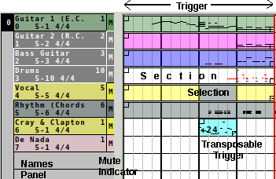

|
Here, we discuss how to build a stand-alone song by laying
out existing patterns.
Pattern loops can be reused and transposed, as
shown in the demo song
Kraftwerk-Europe_Endless-reconstructed.midi.
Or long tracks can be used, and played without a layout or
with a simple layout, as in the demo song
b4uacuse-gm-patchless.midi.
|
-
Pattern creation.
The first step is to create a number of patterns
to represent snippets of the song:
drum loops (intro, main, bridge, etc.), bass loops,
chord loops.
-
Pattern arrangement.
One has to decide at what measures each loop
comes into play.
It can help to create a text file that
shows where each pattern will be played.
-
Lay out the triggers.
Each pattern's playback is represented by one or more
triggers.
See the annotated figure at the right.
A trigger is created by entering edit mode (by the "hand"
button), selecting a pattern and the starting location of the
trigger, and dragging to the left to create as many
repetitions of the loop as desired.
Note that the drawing snaps to the selected snap value.
-
Adjust the triggers.
Once created, triggers can be moved, resized by grabbing and
dragging a square handle at the left or right of the trigger,
split in half by
Ctrl-left-click, and
deleted.
-
Song mode.
In the main window, click the Live button to turn on
Song mode. Now playback will be controlled by the
triggers.
|
|

|
| Song Editor Names and Triggers |
|